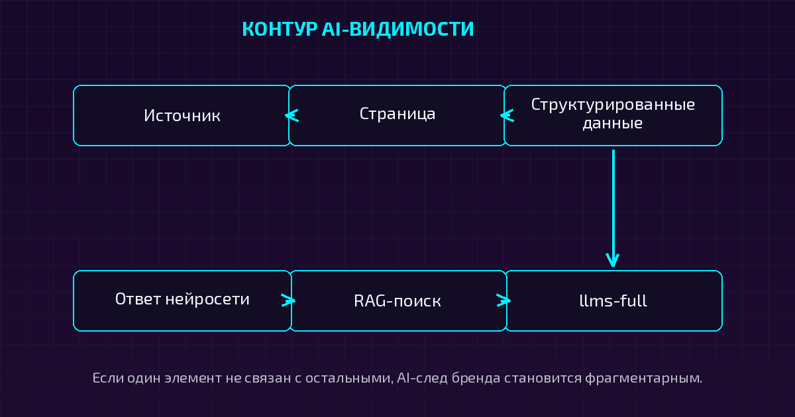

Почему AI-видимость не начинается с контента?
Представьте ситуацию: компания регулярно публикует статьи, настроила SEO, добавила FAQ и открыла сайт для AI-краулеров. Но когда потенциальный клиент спрашивает нейросеть, кого выбрать, бренд не появляется или описывается неточно. Возникает естественный вопрос: «Мы же всё сделали. Почему нас не видят?»
Моя позиция здесь простая: правильный контент — только один участок маршрута. Нейросети должны не только найти страницу, но и понять, что на ней находится, с кем связана компания, кому принадлежит материал, какие услуги она оказывает и можно ли доверять этим данным.
Поэтому GEO-Апгрейд проверяет не отдельную кнопку, а всю сигнальную связность сайта. Если страницы размечены без логики, сущности не связаны, даты расходятся, а бренд существует только внутри собственного домена, даже обязательные настройки не складываются в понятный AI-след.
Нужно ли GEO, если SEO уже работает?
SEO и GEO не отменяют друг друга. Они работают как два слоя одного маршрута.
| Слой | Задача | Что происходит |
|---|---|---|
| SEO | Найти страницу | RAG-система обнаруживает индексированный материал по ключевым словам, структуре, ссылкам и техническим сигналам. |
| GEO | Правильно оценить страницу | Система сопоставляет релевантность, точность, авторитетность, сущности, контекст и пригодность материала для ответа. |
| Связка | Сформировать рекомендацию | Страница не просто находится, а становится частью уверенного ответа нейросети. |
SEO-настройка помогает RAG-системе добраться до материала. GEO помогает системе разобраться, что именно она нашла и можно ли использовать это как часть ответа. Мы не разделяем эти слои стеной: накладываем их друг на друга.
Например, фраза «GEO-продвижение в Томске» может привести систему на страницу. Но для рекомендации нужно связать бренд GEO-Апгрейд, Дарью Жарких, регион, услуги аудита, публикации, кейсы, внешние профили, единые контакты и подтверждающие источники. Это и есть контекстный якорь.
Что мы проверили на собственном сайте?
Проверка прошла по 17 пунктам AI-ready чек-листа. Все 58 URL из sitemap были обработаны парсером. Мы сознательно показываем не только сильные стороны, но и незакрытые разрывы: доверие растёт не от сплошных зелёных галочек, а от понятной картины.
| № | Пункт | Статус | Что найдено |
|---|---|---|---|
| 1 | Organization | ✅ Полностью | Главная: Organization, полный NAP, адрес и Томск в schema. |
| 2 | Person | ✅ Полностью | /about-daria-zharkikh.html: имя, должность, 9 sameAs. |
| 3 | Service | ✅ Полностью | Service на 15 страницах, ProfessionalService ещё на 12. |
| 4 | FAQ | ✅ Полностью | FAQPage на 18 страницах. |
| 5 | Article | ✅ Полностью с нюансом | BlogPosting на 22 статьях; один кейс размечен как Article. |
| 6 | Breadcrumb | 🟡 Почти полностью | 56 из 58 страниц; отсутствие на главной нормально, privacy — должок. |
| 7 | sameAs | 🟡 Частично | 13 страниц с sameAs, 45 без этого блока. |
| 8 | Авторство | 🟡 Частично | author есть в JSON-LD, видимой подписи на 22 статьях нет. |
| 9 | Дата обновления | 🟡 Почти полностью | Машинные даты синхронны, видимого «Обновлено» нет. |
| 10 | Источники | 🔴 Зона роста | Тематических внешних источников в статьях нет. |
| 11 | Контакты | ✅ Полностью | tel и mailto на всех 58 страницах. |
| 12 | Регион | ✅ Полностью | Томск указан на всех 58 страницах. |
| 13 | Структурированные данные | ✅ Полностью | JSON-LD и полный OG-набор на 58 из 58. |
| 14 | Robots | ✅ Полностью | Явно разрешены 20+ AI-краулеров и указана sitemap. |
| 15 | Sitemap | ✅ Полностью | 58 URL, свежие lastmod. |
| 16 | Доступность краулеров | ✅ Полностью | GPTBot, OAI-SearchBot, ClaudeBot, PerplexityBot и другие. |
| 17 | Entity-структура | ✅ Полностью | llms.txt: 58 записей, 0 orphan; llms-full: 684 КБ, 129 секций; глоссарий. |
Откуда взялись цифры?
Факты в этой статье взяты из технического отчёта проверки живого сайта от 05.10.2026. В нём зафиксированы 58 URL, 58/58 страниц с JSON-LD, 22 BlogPosting, 18 FAQPage, 56 BreadcrumbList, 15 Service, 12 ProfessionalService, 20+ AI-краулеров и полное покрытие sitemap в llms.txt.
Это факт аудита. А вывод о том, что такая связность повышает понятность сайта для AI, — рабочая методическая позиция GEO-Апгрейда, а не обещание гарантированного цитирования.
Почему 58 из 58 — это не просто красивая цифра?
JSON-LD на всех страницах создаёт машинно читаемый слой: организация, человек, услуга, статья, FAQ и другие типы контента описываются не только визуально, но и структурировано. Полный OG-набор помогает странице корректно представляться при распространении и связывает публикацию с датой, изображением и типом материала.
Но разметка не является волшебной кнопкой. Она не заставляет нейросеть рекомендовать бренд. Она уменьшает неопределённость, если встроена в общую логику сайта.
То же самое с llms.txt. У GEO-Апгрейда в отчёте зафиксировано 58 записей без orphan-URL, а llms-full.txt содержит 684 КБ и 129 секций. Для нас это контентный маяк — отдельный маршрут к базе знаний сайта, а не замена обычной архитектуре, SEO и внешним подтверждениям.
В robots.txt явно разрешены более 20 краулеров: GPTBot, OAI-SearchBot, ClaudeBot, PerplexityBot, Google-Extended, YandexGPT, Applebot, Bingbot и другие. Это не гарантирует цитирование, но закрытый технический доступ может стать барьером ещё до оценки содержания.

Где сайт всё ещё не идеален?
В отчёте есть три важных разрыва. Мы не прячем их в приложении: именно они показывают, как работает наша методика.
Разрыв первый — sameAs.
Связи с внешними профилями есть на 13 страницах, но 45 страниц остаются без sameAs. Значит, бренд уже имеет цифровой след, но пока не на каждой странице оставляет одинаковую подпись. Это зона связности, а не повод объявлять работу завершённой.
Разрыв второй — авторство.
Автор указан в JSON-LD на 23 страницах, однако на 22 статьях нет видимой подписи. Получается расхождение между машинным и человеческим слоями: разметка знает автора, читатель видит только материал. Мы планируем добавить в лабораторную карточку строку «Протокол ведёт: Жарких Дарья Александровна · GEO-маркетолог».
Разрыв третий — внешние источники.
Во всех статьях внешние ссылки ведут только на технические или социальные ресурсы. Тематических ссылок на документацию, исследования и первоисточники нет. Мы называем это контекстным вакуумом: бренд много говорит о себе, но пока недостаточно связан с независимыми источниками.
Это единственный пункт с нулевым результатом — и поэтому самый честный «до/после». В будущей конвенции каждая статья должна получать 3–5 тематических источников или контекстные ссылки на них.
Как эксперт превращается в лабораторию?
Позиционировать себя как GEO-лабораторию — не значит закрыть глаза на SEO и техническую работу. Наоборот, лаборатория обязана проверять собственную систему так же, как проверяет клиентскую.
| Уровень | Что уже собрано на сайте |
|---|---|
| Эксперт | Person-сущность Дарьи Жарких, должность GEO-маркетолога и AI-консультанта, 9 sameAs. |
| Методология | Глоссарий из 10 терминов, формат Lab Protocol, конвейер замера geo_pipeline. |
| Данные | Витрина метрик: Ghost Gap, Presence, Position и другие показатели. |
| Исследования | Статьи-эксперименты и кейс-прогоны. |
| Диагностика | GEO-сканер Лайт и Полный, бесплатный мини-аудит, технический парсер. |
| Кейсы | cases.html, отслеживатель упоминаний, кейс Make Love Pizza. |
| Внедрение | GEO-штурвал и GEO-маршрут. |
Цепочка уже выстроена. Эта статья собирает её в одном месте и показывает проверкой, а не обещанием. Лаборатория начинается не с громкого слова «методология», а с повторяемого процесса: один список проверок, один способ фиксировать результат, понятные приоритеты и повторный прогон после правок.
Как выглядит лабораторный цикл?
Наш внутренний принцип: если действие повторяется и описывается формулой, его делает машина. Человек остаётся там, где нужны точность фактов, тональность, живость аудитории и решение, что публиковать.
- Сначала проверяем sitemap, страницы, JSON-LD, OG, ссылки, robots.txt и llms-файлы.
- Затем фиксируем результат и расставляем приоритеты P0, P1 и P2.
- После правок снова запускаем парсер и сравниваем baseline с новым состоянием.
- Отдельно измеряем не только техническую готовность, но и реальные AI-ответы по запросам.
Именно здесь появляется важная граница: техническая готовность сайта и фактическая AI-видимость — не одно и то же. Первое можно проверить по коду и файлам. Второе требует прогонов по живым запросам, анализа упоминаний, позиций, ссылок, точности и конкурентов.
Можно ли проверить свой сайт по тем же правилам?
Да. Ниже — сокращённый самотест на основе 17 пунктов. Он не заменяет полноценный аудит, но помогает увидеть первую зону слепоты.
САМОТЕСТ · 17 ПУНКТОВ AI-READY
1Есть ли у сайта актуальная sitemap?
2Доступны ли важные страницы для обхода?
3Разрешены ли нужные AI-краулеры?
4Есть ли Organization-разметка?
5Есть ли Person-разметка?
6Размечены ли услуги?
7Размечены ли статьи?
8Есть ли FAQ с реальными вопросами?
9Есть ли BreadcrumbList?
10Связаны ли страницы с внешними профилями через sameAs?
11Видно ли авторство человеку?
12Совпадают ли даты в тексте, JSON-LD и sitemap?
13Есть ли тематические внешние источники?
14Совпадают ли контакты и регион на страницах?
15Есть ли llms.txt?
16Покрывает ли он все важные URL?
17Проверяете ли вы сайт повторно после изменений?
Таблица · Зоны результата самотеста
| Результат | Что это означает |
|---|---|
| 14–17 «Да» | Техническая база собрана; следующий шаг — проверить реальные AI-ответы. |
| 9–13 «Да» | Отдельные элементы есть, но между ними могут оставаться разрывы. |
| 0–8 «Да» | Сайт рискует оставаться цифровым призраком для части AI-систем. |
Оговорка: самотест показывает техническую готовность, но не гарантирует упоминание в ответах нейросетей. Для этого нужны запросный двойник, повторяемый прогон и анализ того, как бренд видят разные системы.
Что делать, если результат оказался слабым?
Не начинать с массового переписывания всех текстов.
- Проверить, существует ли единая версия бренда: имя, услуги, регион, контакты, авторство и внешние профили.
- Собрать список технических разрывов и разделить его на P0, P1 и P2.
- Проверить связность страниц, сущностей и внутренних ссылок.
- Добавить тематические источники и видимое авторство.
- После правок провести повторный прогон, а затем проверить реальные запросы в AI-системах.
Если бюджет на специалиста пока ограничен, можно начать с бесплатного мини-аудита GEO-Апгрейда. Его задача — не выдать красивую оценку, а показать, как нейросети на самом деле видят бренд: упоминают ли, путают ли факты, называют ли сайт, связывают ли компанию с нужной услугой.
Что мы исправляем дальше?
| Приоритет | Задача | Зачем |
|---|---|---|
| P0 | Добавить sameAs на 45 страницах. | Усилить связность брендовых сущностей. |
| P0 | Ввести тематические источники в статьи. | Закрыть контекстный вакуум и создать независимые опоры. |
| P0 | Опубликовать эту страницу как постоянный GEO-кейс. | Собрать техническую систему в публичный артефакт. |
| P1 | Добавить видимое авторство. | Синхронизировать машинный и человеческий слои. |
| P1 | Добавить видимый маркер обновления. | Сделать актуальность понятной читателю. |
| P1 | Добавить BreadcrumbList на privacy.html. | Закрыть последний небольшой технический долг. |
| P2 | Согласовать Article и BlogPosting для кейса. | Унифицировать типы контента там, где это уместно. |
| P2 | Сверить /index.html и / в llms.txt и sitemap. | Убрать мелкое расхождение адресов. |
После публикации нужно снова прогнать парсер с baseline. Тогда статья будет не просто рассказывать о проверке, а станет её продолжением: нашли → исправили → проверили.
Почему этот кейс важен не только для нас?
Мы показываем собственный путь от эксперта к лаборатории с методологией. Это не история о безупречном сайте. Это история о том, как собственную систему можно разобрать на сигналы, увидеть зоны слепоты и превратить каждое упущение в следующий шаг.
Для бизнеса это означает важную вещь: AI-видимость нельзя безопасно покупать как набор магических настроек. Её нужно строить как операционную систему бренда — с картой запросов, техническим основанием, контентом, внешними подтверждениями и повторными замерами.
Наш сайт — очередной GEO-кейс. Не потому, что он уже идеален, а потому, что его можно проверить теми же инструментами и по тем же правилам, которые мы предлагаем клиентам.
Что делать дальше?
Начните не с вопроса «Как написать ещё одну статью?», а с вопроса «Существует ли для нейросети связная версия моего бренда?» Если ответа нет, контент будет работать в одиночку. Если связность есть, каждый новый материал сможет усиливать AI-след бренда.
Честный CTA: проведите первый бесплатный мини-аудит и узнайте, как нейросети видят ваш бренд — и видят ли вообще.